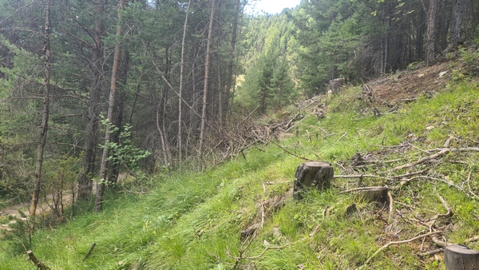
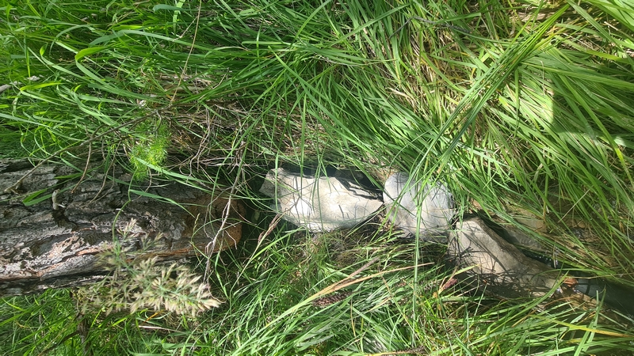

Mon Domaine d'Intervention

J'interviens dans toute la région du sud-est de la France, notamment dans les zones rurales où la recherche d'eau par un sourcier est primordiale.
Chaque intervention est personnalisée en fonction du terrain et de vos besoins. Que ce soit pour une recherche d’eau souterraine en vue d’un forage, une détection de nappe phréatique, ou une analyse d’énergies telluriques, je me déplace sur site pour un travail rigoureux et intuitif.
